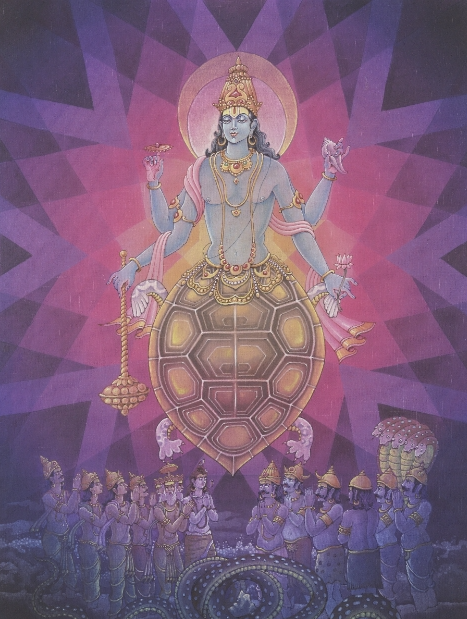
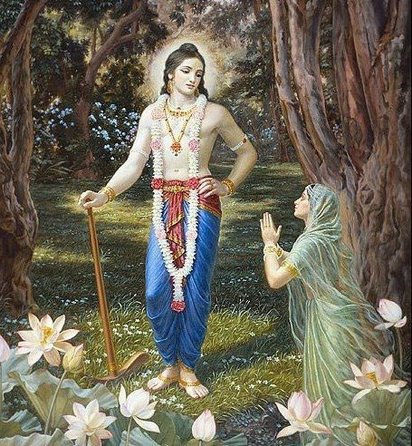

Lord Vishnu (center blue figure) showing his true form to Arjunan (The Archer kneeling on the left)
What is the Dasavatharam
The Dasavatharam are the 10 avatars of Lord Vishnu throughout history. In Sanskrit "Dasa" means 10 and "avatharam" means avatar. These avatars are manifested by Vishnu to preserve dharma in the universe. These 10 core beings are
1. Lord Matsya Avatar 2.Lord Kurma Avatar 3. Lord Varaha Avatar 4. Shri Lakshmi Narashima Avatar5. Lord Vamana Avatar 6. Lord Parashurama Avatar7. Shri Rama Avatar 8. Lord Balarama Avatar 9.Shri Krishna Avatar10. Lord Kalki Avatar